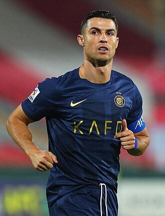

Cristiano Ronaldo dos Santos Aveiro GOIH ComM (Portuguese pronunciation: [kɾiʃˈtjɐnu ʁɔˈnaldu]; born 5 February 1985) is a Portuguese professional footballer who plays as a forward for and captains both Saudi Pro League club Al Nassr and the Portugal national team. Widely regarded as one of the greatest players of all time, Ronaldo has won five Ballon d'Or awards,[note 3] a record three UEFA Men's Player of the Year Awards, and four European Golden Shoes, the most by a European player. He has won 33 trophies in his career, including seven league titles, five UEFA Champions Leagues, the UEFA European Championship and the UEFA Nations League. Ronaldo holds the records for most appearances (183), goals (140) and assists (42) in the Champions League, goals in the European Championship (14), international goals (128) and international appearances (206). He is one of the few players to have made over 1,200 professional career appearances, the most by an outfield player, and has scored over 890 official senior career goals for club and country, making him the top goalscorer of all time.
Since his reputation grew at Manchester United, Ronaldo has signed many sponsorship deals for consumer products, including sportswear, football boots; since November 2012, Ronaldo has worn the Nike Mercurial Vapor personalised CR7 edition,[572] soft drinks, clothing, automotive lubricants, financial services, electronics, and video games.[573][574][575][576] Ronaldo featured as the cover star of FIFA video game FIFA 18 and was heavily involved in the game's promotion.[577] His "Sii" goal celebration features in the FIFA series, accompanied with his own voiceover.[549] He was also the face of Pro Evolution Soccer, appearing on the covers of the 2008, 2012 and 2013 editions of the game